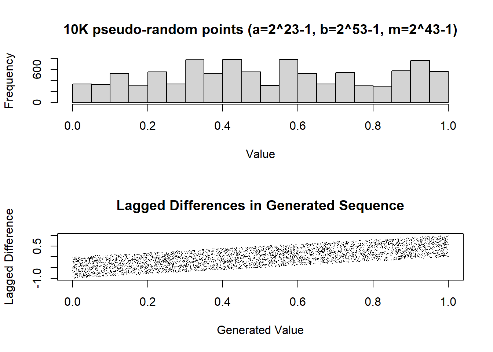
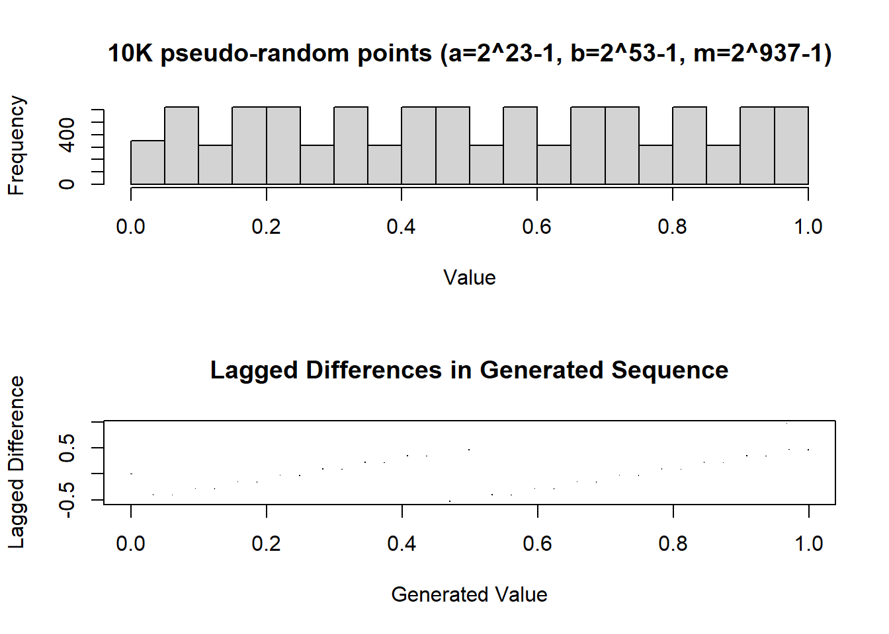

2.8 Lesson 4
2020-03-02
Classe Exercises (code given by the professor)
2.8.1 Random Number Generation
Linear Congruential Generator
One of the most common pseudo-random number generator is the linear congruential generator, which uses the recurrence:
\(u_{k}\) = (\(a.u_{k-1}\) + \(b\)) mod \(m\)
# linear congruential generator
.my.seed <- as.numeric(Sys.time())
my.set.seed <- function(seed=as.numeric(Sys.time())) {
assign(".my.seed", .GlobalEnv, value=seed)
}
my.rlcg<- function(n, min=0, max=1, a=2^23-1, b=2^53-1, m=2^43-1){
seq <- NULL
for (i in 1:n){
tmp <- (a * get(".my.seed", env=.GlobalEnv) + b) %% m
seq <- c(seq, (tmp / m) * (max - min) + min)
assign(".my.seed", env=.GlobalEnv, value=tmp)
}
seq
}\(m\) = \(2^{10}-1\)
par(mfrow=c(2,1))
m <- 2^10 - 1
my.set.seed(523)
gen <- my.rlcg(10000, m=m)
hist(gen, main=paste("10K pseudo-random points (a=2^23-1, b=2^53-1, m=2^10-1)"), col="lightgrey",xlab="Value")
plot(gen, c(0,diff(gen)), main="Lagged Differences in Generated Sequence", xlab="Generated Value", ylab="Lagged Difference", pch=".", cex=.8)\(m\) = \(2^{43}-1\)
par(mfrow=c(2,1))
m <- 2^43 - 1
my.set.seed(523)
gen <- my.rlcg(10000, m=m)
hist(gen, main=paste("10K pseudo-random points (a=2^23-1, b=2^53-1, m=2^43-1)"), col="lightgrey",xlab="Value")
plot(gen, c(0,diff(gen)), main="Lagged Differences in Generated Sequence", xlab="Generated Value", ylab="Lagged Difference", pch=".", cex=.8)
\(m\) = \(2^{521}-1\)
par(mfrow=c(2,1))
m <- 2^521 - 1
my.set.seed(523)
gen <- my.rlcg(10000, m=m)
hist(gen, main=paste("10K pseudo-random points (a=2^23-1, b=2^53-1, m=2^521-1)"), col="lightgrey",xlab="Value")
plot(gen, c(0,diff(gen)), main="Lagged Differences in Generated Sequence", xlab="Generated Value", ylab="Lagged Difference", pch=".", cex=.8)\(m\) = \(2^{937a}-1\)
par(mfrow=c(2,1))
m <- 2^937 - 1
my.set.seed(523)
gen <- my.rlcg(10000, m=m)
hist(gen, main=paste("10K pseudo-random points (a=2^23-1, b=2^53-1, m=2^937-1)"), col="lightgrey",xlab="Value")
plot(gen, c(0,diff(gen)), main="Lagged Differences in Generated Sequence", xlab="Generated Value", ylab="Lagged Difference", pch=".", cex=.8)
\(U[0, 1]\)
par(mfrow=c(2,1))
set.seed(523)
gen <- runif(10000, min=0, max=1)
hist(gen, main=paste("10K pseudo-random points (using runif)"), col="lightgrey",xlab="Value")
plot(gen, c(0,diff(gen)), main="Lagged Differences in Generated Sequence", xlab="Generated Value", ylab="Lagged Difference", pch=".", cex=.8)2.8.2 My simple solution for a random number generator:
2.8.3 Transition probabilities
Rate = \(\frac{-ln(1-p)}{t}\)
Probability = \(1 - e^{-rt}\)
Exercise
Portuguese population is 11M people. 12% of the population is considered at risk for a certain disease, from which:
• 60% are male, and
• 45% are more than 65 years old.
Risk factors are considered independent.
For this sub-population, 20-year risk estimates indicate:
a risk of disease of 10%
• 15% in men | 3% in women
• 5% if \(<\) 65yo | 16.5% if \(\ge\) 65yo
a any-cause mortality of 10%
• 0.5% if \(<\) 65yo | 21.5% if \(\ge\) 65yo
Simulate the population at risk of disease.
The resulting data frame should contain 4 columns:
• Gender
• Age group
• Yearly risk of death - i.e. transition probabilty from alive to dead.
• Yearly risk of disease - i.e. transition probability from healthy to ill.
N <- 11000000 # população
n <- 0.12*N # população em risco
sex<-sample(c("m","f"), replace = TRUE, n, prob = c(0.6,0.4)) # sexo da população em risco
age<-sample(c("-65","+65"), replace = TRUE, n, prob = c(0.55,0.45)) # grupo etátio da população em risco
# criar data frame com colunas 'sex' e 'age'
data<-data.frame(sex,age)
# definição dos riscos estimados a 20 anos
p.m.65 <-0.215 # probabilidade de morte a 20 anos de <65yo
p.m.64 <-0.005 # probabilidade de morte a 20 anos de >=65yo
p.d.m <-0.15 # probabilidade de doença a 20 anos do sexo masculino
p.d.f <-0.03 # probabilidade de doença a 20 anos do sexo feminino
p.d.65 <-0.165 # probabilidade de doença a 20 anos de >=65yo
p.d.64 <-0.05 # probabilidade de doença a 20 anos de <65yo
# Rate = (-ln(1-p)) / t
# Probability = 1 - exp(-rt)
library(tidyverse)
# acrescentar ao data frame as colunas com as probabilidades anuais de morte e de doença
data<-data %>% mutate(taxa.mort.20y = case_when(age == "+65" ~ (-log(1-p.m.65))/20,
TRUE ~ (-log(1-p.m.64))/20), # calculo da taxa de mortalidade a 20 anos
prob.mort.1y = 1-exp(-taxa.mort.20y * 1), # calculo da probabilidade anual de morte
taxa.dx.20y = case_when(sex == "m" & age == "+65" ~ (-log(1-p.d.m*p.d.65))/20,
sex == "m" & age == "-65" ~ (-log(1-p.d.m*p.d.64))/20,
sex == "f" & age == "+65" ~ (-log(1-p.d.f*p.d.65))/20,
sex == "f" & age == "-65" ~ (-log(1-p.d.f*p.d.64))/20
), # cálculo da taxa de doença a 20 anos
prob.dx.1y = 1-exp(-taxa.dx.20y * 1) # calculo da probabilidade anual de doença
) %>%
select(-taxa.mort.20y, -taxa.dx.20y)
require(printr)
# ver as primeiras linhas dos dados
head(data)| sex | age | prob.mort.1y | prob.dx.1y |
|---|---|---|---|
| f | +65 | 0.0120306 | 0.0002481 |
| f | -65 | 0.0002506 | 0.0000751 |
| m | +65 | 0.0120306 | 0.0012523 |
| m | +65 | 0.0120306 | 0.0012523 |
| f | +65 | 0.0120306 | 0.0002481 |
| m | -65 | 0.0002506 | 0.0003763 |
How many of the patients developed the disease in the first year?
| sex | age | prob.dx.1y | n | nr.doentes |
|---|---|---|---|---|
| f | -65 | 0.0000751 | 289923 | 21.75973 |
| f | +65 | 0.0002481 | 237865 | 59.01046 |
| m | -65 | 0.0003763 | 435537 | 163.91108 |
| m | +65 | 0.0012523 | 356675 | 446.65938 |
total de doentes no primeiro ano: 691
How many of the patients died in the first year?
| age | prob.mort.1y | n | nr.mortos |
|---|---|---|---|
| -65 | 0.0002506 | 725460 | 181.7971 |
| +65 | 0.0120306 | 594540 | 7152.6874 |
total de mortos no primeiro ano: 7334